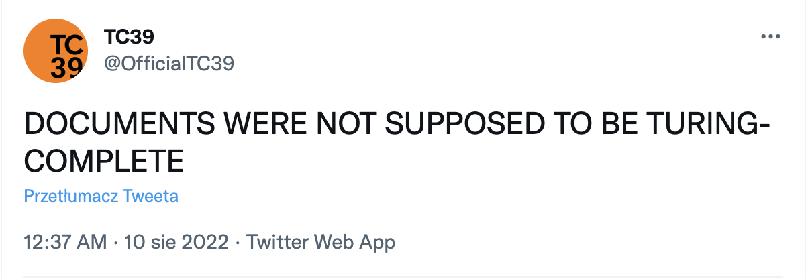

Some time ago I have seen a meme about JavaScript and the current state of the Web, that the documents were not supposed to be Turing Complete. Which is a call out of how unnecessarily complex current websites are - a ton of scripting just to display a page with an article, news, a product, etc.

Turing Complete means more or less that a system can solve any computational problem, things such as addition and multiplication but also more complex like math for 3d graphics, and many more. A document is a shared piece of information on the Web, like a blog post. Coming back to the meme, it means that websites were supposed to be pure text and not systems that can solve any computable problem.
JavaScript is in fact Turing Complete
WorldWideWeb: Proposal for a HyperText Project
Long story short yes-ish. If you read WorldWideWeb: Proposal for a HyperText Project by Tim Berners-Lee, which I recommend, you can find this:
The project will operate in a certain well-defined subset of the subject area often associated with the "Hypertext" tag. It will aim:
- to provide a common (simple) protocol for requesting human readable information stored at a remote system, using networks; (…)
The project will not aim (…)
- to do research into fancy multimedia facilities such as sound and video;
- to use sophisticated network authorisation systems. data will be either readable by the world (literally), or will be readable only on one file system, in which case the file system's protection system will be used for privacy. All network traffic will be public.
Ok, so human-readable format, no fancy stuff like sound or video, no authorization. Current websites have certainly moved from that initial state. What I get from the proposal is that the documents were supposed to be text with links to other documents. Does not sound like a computational system, fair enough, not Turing Complete.
It is partially nostalgia, wanting to come back to simpler times that happened when we were younger, classic humans. But it’s not only that.
Added complexity certainly gave us amazing possibilities but it also allowed for things that we were probably better off without like intense personalized tracking, popup ads, and blog posts that load very long where the important part is just the text.
And, some people care, for example, the aforementioned Tim Berners-Lee thinks that the Web needs a mid-course correction because it spreads a lot of fake news and hatred, this is very closely correlated with tracking of users’ behavior and profiling.
Tim Berners-Lee: The World Wide Web - A Mid-Course Correction
I think that the problem is both technological, political, and also ecological. It is a problem that the politicians, agencies, and corporations want to spy on us but it is also an ethical problem for engineers that we enable this to happen by building the tools.
Let’s have a quick look and the nostalgia part too. Was the Web nicer before? Free of tentacles of the corporate world?
Yes and no. No because the dotcom bubble happened very soon (1995 - 200) after the World Wide Web was publicly available (1993). So very soon an important part of the Web was the business. And yes - because parallel to the corporate world another space was created, one of blogs, Geocities, irc. I very much recommend Tech won’t save us podcast for insights into the early Internet and how it was shaped, eg recent episode:
How the Modern World Shaped the Internet.
I find it interesting that already in 1998 said:
“A lot of people ask me whether I am disappointed that the Web has taken on such a lot of commercial material, rather than being a pure academic space. In fact, I know it could not be universal if it did not allow any form of communication.”
The World Wide Web and the "Web of Life" Tim Berners-Lee
I think that we as engineers have dropped the ball on the Web technologies to be honest. I know very well that usually the tracking requirements and dark patterns come from the top in companies but we should do as much as possible to minimise the harm. As in, we don’t need all that personalised data, and the tendency is to track everything. Seeing if the users are using the product as in intended can also work while tracking very specific events and without personal data attached. If the purpose is to sell products, just track what people that buy product A buy also.
What tracking is also doing is generating a lot of the Web traffic. You first need to download tracking software and then send dozens of requests all the time to track every move. No wonder that websites are slower than they used to be.
In the last 10 years the average size of a website came from 750 kB to 2-3 MB now (in August 2022), according to httparchive.org. Which means an increase of around 400%.
This is actually partially due to all the tracking and ads trash that gets send along with the proper HTML. But the last 10 years also coincide with the rise of frameworks like Angular, React and Javascript runtime Node.js. While this is a great step towards making complex Web Apps, it also increased the traffic by a lot and it’s also a mixed result for accessibility.
The websites may have more interesting code now, but in the last 10 years most of them have not changed drastically - there are a lot of news pages, social medias, online shops, etc. But what has changed is the complexity and size, that goes up every year. And this is certainly not good for people that do not have access to a fast Internet connection, currently it’s already very hard to use the Web without it. Fancy design is nice, but it’s often not too good for accessibility, eg low colour contrast, hard to navigate via readers etc. What is also taking a hit with such big website sizes is the nature. Power used for the Web is somewhat invisible but all this website that calculate a lot of data on our phones are taking up energy that very often does not come from green energy. This is especially horrible in an adjacent space - cryptocurrencies that burn through energy like fire.
I recommend going to website carbon calculator and checking an estimate to how much carbon websites are generating. Websites like BBC and CNN (according to this website’s estimates) are generating around 140kg of CO2 for every 10k visitors a month. And I don’t mean to say to not go to bloated websites but rather as call to action for engineers.
Personally I have adopted 2 approaches to the current Web. Since I am an engineer that works primarily with the frontend part of the Web I try to push projects to be accessible, open source if possible and to respect people’s privacy. It does feel futile very often to be honest, financial motives always prove more important for companies than any other metric. That’s one of the reasons I don’t think that capitalism can change. Nonetheless, I think a “fight from within” is needed, otherwise it would be much worse, eg except for Firefox and Safari all major browsers are using Google’s engine which creates an almost monopoly on what gets developed and what not. But I think the important word there is “almost”. Also when developing the new projects and technologies I can try to predict and limit harmful usage of the tech beforehand.
The other approach is related to my last point. There are other technologies out there, parallel to the Web that try to correct the wrongs, for example Project Gemini. It does not try to replace the Web but to give an alternative. By default Gemini focuses on markdown and does not allow for dynamic code modification like JavaScript, styling like CSS. This severely limit options to track user’s behaviour, add ads and to create code heavy sites, all this is great. It is not designed to necessarily serve mainstream needs and that’s ok, it’s enough to offer a slower and welcoming place. Feel free to come by to Midnight Pub (gemini://midnight.pub/) or to read the Smol Zine (gemini://gemini.cyberbot.space/smolzine/). If you would like to browse gemini without a special browser you can use my proxy, note that it is work in progress and not everything works.
Other place that is partially inside the Web itself is Fediverse, it’s a set of primarily forums, running mastodon (free clone of twitter). There is also tildeverse with simple websites hosted by passionates, check out Tilde Town. I really recommend to watch a recent talk by James Tomasino:
Rocking the Web Bloat: Modern Gopher, Gemini and the Small Internet
That’s a lot of talking, and in the end I think that documents should not be Turing Complete. However, I also think there is a difference between documents and what has evolved to be a proper Web App. Things that provide a real usability like 3d graphics visualisations or maps, there is certainly place for that and I would treat them rather as applications similar to desktop applications than websites. So both can be true, apps can have more complicated code bases but blogs, news sites, etc don’t really need that much.